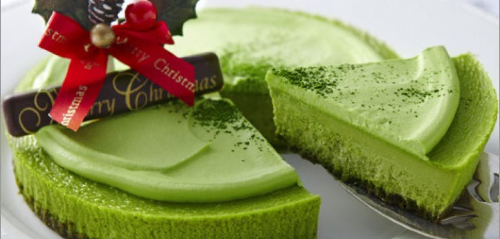

Чізкейк з матчею

Інгрідієнти:
Начинка: 900 гр вершкового сиру, 3 яйця, 1 жовток, 250 гр жирної сметани, 150-200 гр цукру, 1 столова ложка лимонного соку, 2-3 столові ложки муки чи крахмалу, чай матча( за смаком):
Основа: 1 пачка шоколадного печива, 2 стол ложки вершкового масла( кількість масла напряму залежить від кількості печива);
Топінг:
200 гр маскарпоне, 100 гр вершків 30 %, цукрова пудра( за смаком),чай матча( для крему і посипки);
Спосіб приготування:
Змішати цукор з крахмалом і матча. Добавте по одному яйця, кожен раз ретельно перемішуючи Добавте вершковий сир, знов перемішайте. Тепер можна добавити в сцміш сметану та лимонний сік. Залишіть начинку на 10-20 хвилин, щоб цукор повністю розтворився. Поламайте шоколадне печиво на крихти, добавте вершкове масло так, щоб вийшло тісто. Розприділіть тісто по формі по дну та боках. Поставте на дно духовки противень з водою( щоб чізкейк не розламався) Розігрійте духовку до 160-170 градусів. Чим нижча температура випічки, тим кращий колір, але час на приготування тоді збільшується. Не відкривайте духовку без необхідності, бо це може викликати тріщини в чізкейку. Вилийте в форму для випічки чізкейкі випікайте до готовності. Чізкейк готовий, коли середина трохи хитається при постукуванні ложкою по формі. Готовий чізкейк дістаньте з духовки і зразу ж відділіть від стінок форми ножем, потім його треба охолодити і поставити в холодильник на декілька годин